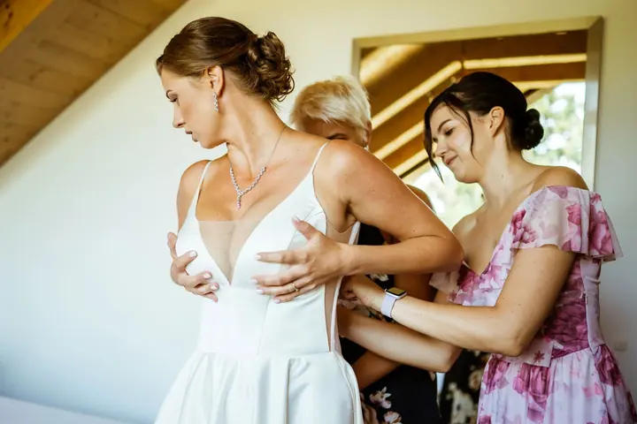
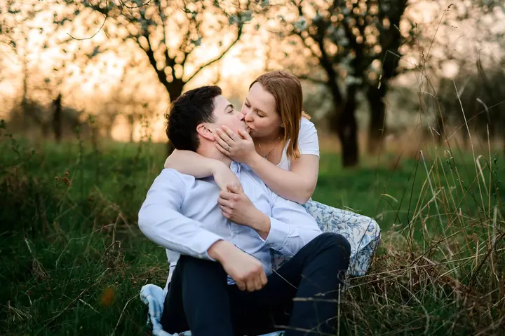
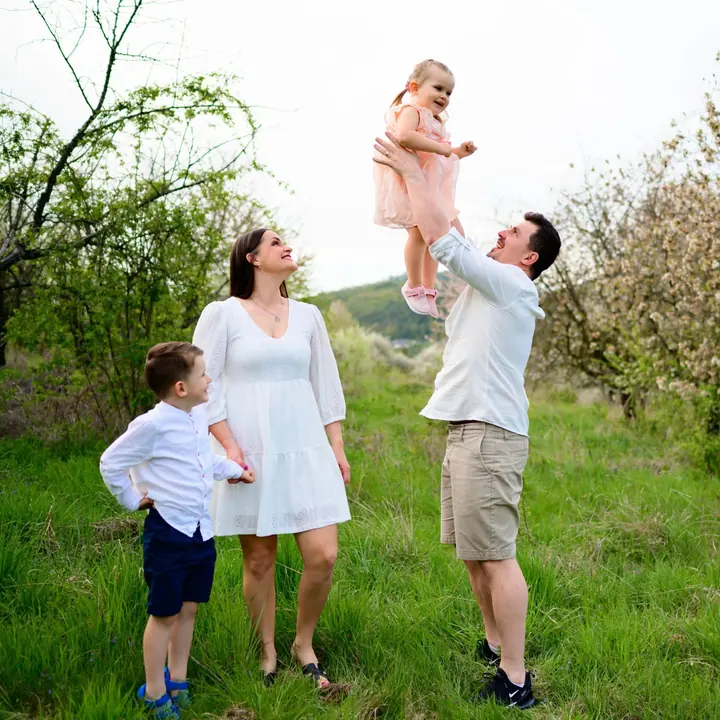
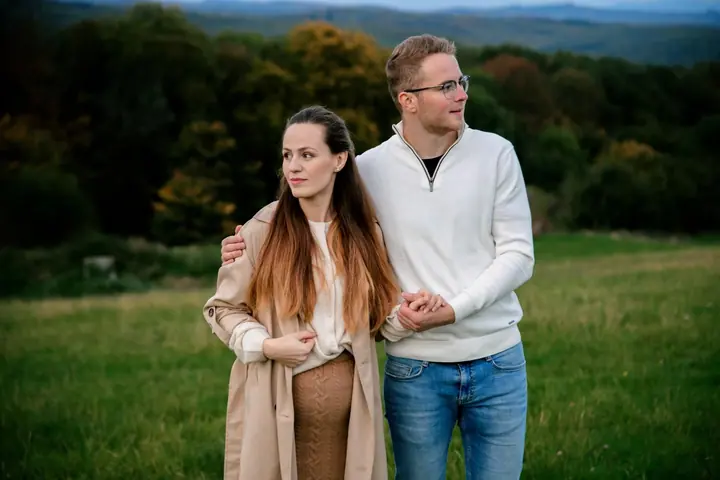

jedna
Svatební focení
Celý svatební den zdokumentujeme do příběhu, od ranních příprav přes obřad a focení skupinek až po večerní zábavu. Fotíme ve dvou, takže můžeme být současně u nevěsty i u ženicha.

Svatební fotograf, fotí ve dvojici s manželkou · Zlínský kraj, Olomoucký kraj, Jihomoravský kraj

Jmenuji se Jindřich Zetík a fotím hlavně svatby, páry a rodiny. Fotíme ve dvojici s manželkou, takže na svatbě budete mít rovnou dva fotografy za cenu jednoho. Máme rádi přirozené fotky, plné emocí, úsměvů a detailů.
Více o mně
Co fotím
jedna
Celý svatební den zdokumentujeme do příběhu, od ranních příprav přes obřad a focení skupinek až po večerní zábavu. Fotíme ve dvou, takže můžeme být současně u nevěsty i u ženicha.
dvě
Uvolněné focení ve dvou, venku a v přírodě. K celodennímu svatebnímu balíčku je předsvatební focení zdarma, ideální příležitost focení s námi vyzkoušet.
tři
Přirozené fotky celé rodiny, kde jsou hlavně úsměvy, hra a pohoda. Cca 15 upravených fotek v digitální podobě.
Klidné focení v očekávání miminka, ideálně venku a s partnerem. Cca 15 upravených fotek v digitální podobě.
Zdokumentujeme váš den, aby byl takový, jaký byl

Za objektivem
Fotografování je mojí vášní a na svatbách se s manželkou pohybujeme už více než 16 let. Zaměřuji se převážně na svatby, rodinné a párové focení a portréty. Nejraději fotíme situace, kdy ani nevíte, že vás fotíme, a nenápadně se přitom snažíme vytvářet dobrou náladu a pohodu.
Váš den zachytíme bez větších zásahů do dění. Nebudeme vás nutit stále pózovat, poradíme jen u skupinového focení a focení novomanželů, aby vznikly krásné a přirozené fotky. Protože se vzájemně doplňujeme, můžeme být současně na dvou místech a fotky budete mít z různých pohledů a úhlů.
Vyjíždíme z Uherského Hradiště a působíme ve Zlínském, Olomouckém a Jihomoravském kraji, po dohodě přijedeme i jinam. Fotíme na profesionální techniku ve vysokém rozlišení, takže si fotky můžete vytisknout i ve velkém formátu.
Jindřich
Do formuláře nebo e-mailu nám napište datum svatby, místo obřadu a hostiny a předpokládaný rozsah focení. Ozveme se vám s nabídkou.
Domluvíme si vaše představy a podrobnosti o svatbě a rádi poradíme s časovým harmonogramem. Schůzku můžeme spojit s předsvatebním focením.
Fotíme ve dvou, takže stihneme přípravy nevěsty i ženicha zároveň. Zdokumentujeme den od rána přes obřad a focení při západu slunce až po večerní zábavu.
Každou fotku upravím (ořez, expozice, barvy, sjednocení pleti) a předám v elektronické podobě, v plném rozlišení pro tisk i zmenšenou pro web.
Portfolio
Otázky
Balíček mini za 6 000 Kč zahrnuje cca 3 hodiny focení a 100 upravených fotek, balíček do 7 hodin stojí 13 000 Kč a celodenní focení s cca 500 fotkami 18 000 Kč. Ceny jsou orientační, individuální cenu podle délky focení se dá domluvit. Připočítává se cestovné 8 Kč/km z Uherského Hradiště a zpět.
Můžeme být současně na dvou místech, třeba u přípravy nevěsty i ženicha, takže nám neuteče nic důležitého. Fotky pak máte z různých pohledů a úhlů, a to za cenu jednoho fotografa.
Ne. Den zachytíme bez větších zásahů do dění. Radíme jen při skupinovém focení a focení novomanželů, aby fotky vyšly krásné a přirozené.
1 800 Kč, dostanete cca 15 upravených fotek v digitální podobě.
Při závazné objednávce se platí domluvená záloha, celková cena je splatná v den focení.